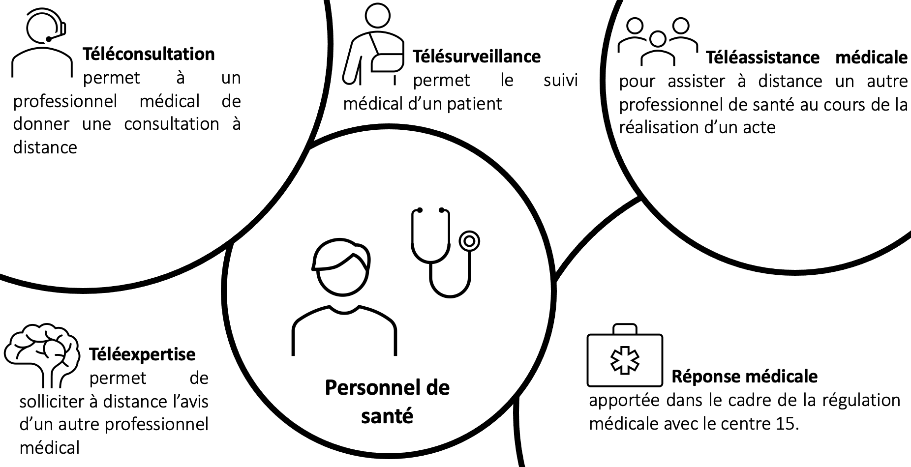

En Europe, la télémédecine est une pratique qui se développe à grande vitesse. Le million de téléconsultations dépassé au mois d’avril pour la France est signe que cette innovation, qui peinait jusqu’alors à trouver sa place auprès des praticiens malgré ses nombreux avantages, connaît enfin un essor.
Mais la télémédecine, c’est quoi ?
La télémédecine, c’est une nouvelle façon d’assurer vos actes médicaux en utilisant les technologies de l’information et de la communication. Cette pratique vous ouvre un champ vaste de nouvelles possibilités afin d’améliorer l’accès aux soins mais aussi d’assurer une expertise médicale proche des patients, même sans présence physique.
On peut la définir en cinq actes médicaux :
Quels avantages pour les professionnels de santé ?
Les avantages de la télémédecine en font une solution complémentaire idéale. D’abord pour le patient, puisqu’elle permet de réduire les déplacements fréquents induits par le suivi des maladies chroniques. Elle pallie également la faible densité de médecins en zones rurales, avec pour résultat une meilleure prise en charge au plus près du lieu de vie. Elle permet aussi le renouvellement des ordonnances de traitements réguliers qui ne nécessitent pas une consultation en cabinet.
Mais c’est aussi et surtout des avantages pour vous, les praticiens. En effet, cette solution offre une prise en charge plus rapide en cas d’urgence ou lors des épidémies liées à l’Hiver tout en supprimant l’exposition des deux partis. La télémédecine peut être le moyen de solliciter le concours d’un collègue rapidement lorsqu’un cas nécessite l’avis d’un spécialiste. Elle constitue enfin un gain de temps précieux pour les médecins généralistes surchargés qui ne trouvent plus le temps de se déplacer à domicile : c’est une voie d’amélioration au niveau organisationnel et efficacité des soins.
Les avantages de la télémédecine en font donc avant tout pour vous, personnel de santé, un moyen de soigner avec les mêmes exigences de qualité et de sécurité que des actes classiques en utilisant de nouveaux outils.
Les perspectives d’avenir
Avant l’épidémie, la télémédecine comptait environ 10 000 téléconsultations par semaine. On constate un pic à plus d’1 million sur la 2ème semaine d’avril, et bien que ce chiffre soit en baisse depuis l’été, le constat global reste celui d’une augmentation. Aujourd’hui stabilisée autour de 150 000, la pratique semble s’installer durablement dans les habitudes des Français qui ont pu constater l’efficacité de cette nouvelle méthode. On peut ajouter à cela le fait que depuis 2018, les téléconsultations effectuées sur l’ensemble du territoire français peuvent donner lieu à un remboursement de la part de l’Assurance maladie. Ces conditions de remboursement ont d’autant plus été assouplies en raison de la Covid-19.
La télémédecine représente une vision d’avenir faisant évoluer la médecine et l’offre de soins vers une meilleure efficacité. Elle a pour but de compléter vos actes médicaux en présentiel et non pas de les remplacer.
Envie de vous lancer dans l’aventure ? Synapse Medecine, N°1 en France de l'aide à la prescription en télémédecine, est là pour vous accompagner.